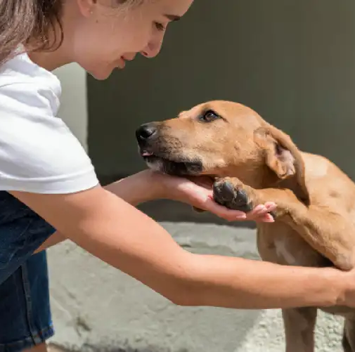
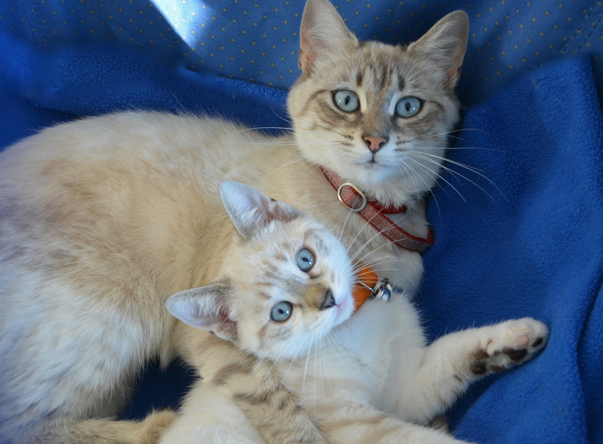
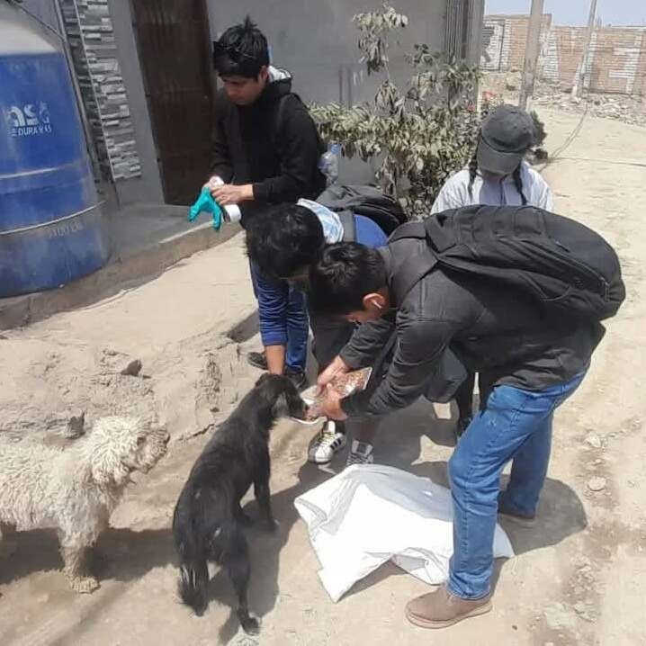

Cómo evitar el abandono de mascotas en Callao
Una mascota es parte de tu familia. Nos brinda cariño, compañía y alegría cada día.
Tener una mascota significa asumir la responsabilidad de cuidarla y protegerla.
Abandonar nunca es la solución: antes de adoptar, piensa si puedes darle tiempo, alimento y atención veterinaria durante toda su vida.
 Cuidado responsable
Cuidado responsable
Amor y compañía
Protección
No al abandono